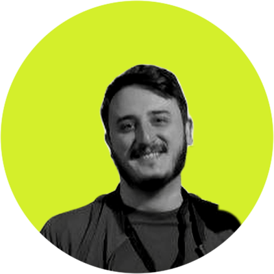
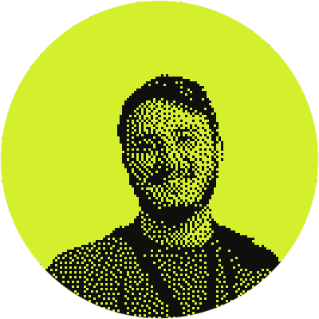
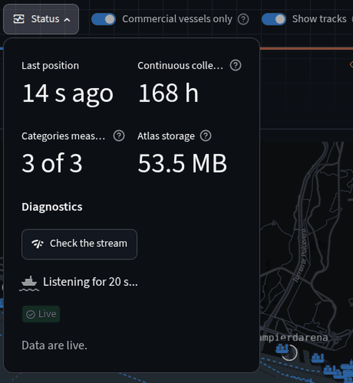

open to work
Giuseppe Saluto
Backend developer. I build backends that turn real-world data into something people can use. Python is my main language; Rust is what I reach for when a service has to be small and fast.
Off the clock: trekking and nature, video games, fantasy and sci-fi worlds, and optimizing something that probably didn't need optimizing.


- shipped
- aisstream on hex
- base
- modena, italy
- seeking
- backend or devops
- where
- on-site or hybrid in emilia-romagna · remote · open to relocate
projects
- hex packagein progress aisstream WebSocket client for the AISStream API. Reconnects with backoff, compression, live ship positions. elixirwebsocket
- port of genoain progress HarborWatch Live port congestion monitor on AIS data, with a berth plan optimizer for the ships waiting at anchor. pythonmongodbstreamlitor-tools
- nasa datadone AstroForge Tracks near-Earth asteroids: a Python API, a Rust risk engine, MongoDB and a terminal dashboard. pythonrustmongodbdocker
- satellite dataon hold Umbra Finds urban heat islands and green areas from Sentinel-2 imagery, shown on a navigable map. pythonflaskmongodbfolium
- industrial ioton hold MQTT-Telemetry-Lab Simulated factory machines publish over MQTT, a Rust service stores the readings, Grafana shows them live. pythonrusttimescaledbgrafanadocker
- terminal appdone Mouse_mover Keeps the computer awake by nudging the mouse, with a terminal interface. rustratatui
stack
- python
- My Swiss Army knife.
- rust
- For the heavy lifting.
- elixir
- Learning the "let it crash" philosophy.
- docker
- To ship what I need, anywhere.
- mongodb
- Build anything, change everything.
case study: harborwatch
Why this stack
Python for fast prototyping and its huge set of libraries, and because it's the language I've known the longest. When you work with data, it's always a sensible choice.
The database could have been something else, but AIS data changes with the type of ship, and a document fits that well. It also gives me geospatial indexes and automatic expiry (TTL) out of the box.
Streamlit because I'm not a frontend developer, and it kept the whole stack in Python.
What didn't work the first time
On October 9 my dashboard showed zero ships in the port of Genoa for over two hours. The database was up, the ingestion was running, the stream was connected. So I listened to the whole world for one minute: 8,066 AIS messages. The Mediterranean: 1,030. Marseille 201, Livorno 29. Genoa: 0.
Nothing was broken on my side: the shore receiver covering Genoa had gone quiet. Now one click on Status listens to the live stream for 20 seconds and tells you which link failed: the database, the ingestion, the AIS feed, or just no coverage over the port.
In data, a zero is a claim. You should be able to back it up.

What I'd do differently today
Plan for a second data source from day one. Everything depends on AISStream, a free feed with no guarantees, and October 9 showed what happens when its receiver over Genoa goes quiet. The Status check tells me which link broke, but it can't bring the ships back.
Today I'd build the ingestion to merge more than one feed and drop the duplicates: AISHub, which shares data with whoever contributes a receiver; a commercial network such as Worldwide AIS; or my own receiver, an RTL-SDR and a VHF antenna on the Raspberry Pi.
now
- Studying Rust and Elixir.
- Just finished a course as a robotic systems maintenance technician, to better understand the hardware side of industrial processes and IoT.
- Looking for a backend or DevOps role. Say hi.